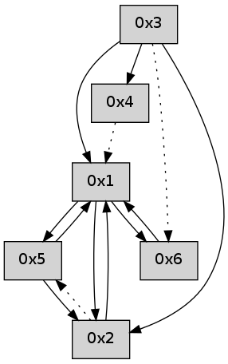

>> << IDX [start] -100 -25 -5 +0 +5 +25 +100 [415.006782055]
 Previous packets
----------------------------------------------------------------------
410.075734 beacon01(adaf) #0 coord=01,02,05,03,04,06 cycle=432.0ms assoc
-- color-indic=0 64 38 62
410.085695 beacon02(adaf) #0 coord=01,02,05,03,04,06 cycle=432.0ms assoc 64 69 9d
410.095695 beacon05(adaf) #0 coord=01,02,05,03,04,06 cycle=432.0ms assoc 64 cf b7
410.105696 beacon03(adaf) #0 coord=01,02,05,03,04,06 cycle=432.0ms assoc 64 53 93
410.115695 beacon04(adaf) #0 coord=01,02,05,03,04,06 cycle=432.0ms assoc 64 f5 b9
410.125696 beacon06(adaf) #0 coord=01,02,05,03,04,06 cycle=432.0ms assoc 64 81 a5
----------------------------------------------------------------------
410.567843 beacon01(adaf) #0 coord=01,02,05,03,04,06 cycle=432.0ms assoc
-- color-indic=0 64 74 d2
410.577804 beacon02(adaf) #0 coord=01,02,05,03,04,06 cycle=432.0ms assoc 64 25 2d
410.587804 beacon05(adaf) #0 coord=01,02,05,03,04,06 cycle=432.0ms assoc 64 83 07
410.597804 beacon03(adaf) #0 coord=01,02,05,03,04,06 cycle=432.0ms assoc 64 1f 23
410.607805 beacon04(adaf) #0 coord=01,02,05,03,04,06 cycle=432.0ms assoc 64 b9 09
410.617805 beacon06(adaf) #0 coord=01,02,05,03,04,06 cycle=432.0ms assoc 64 cd 15
410.629439 [Hello(4): seq=208 asym=1 sysInfo= stat=1:15,0,0,0]
410.631222 [Hello(1): seq=107 sysInfo= stat=]
----------------------------------------------------------------------
411.059952 beacon01(adaf) #0 coord=01,02,05,03,04,06 cycle=432.0ms assoc
-- color-indic=0 64 b0 bd
411.069912 beacon02(adaf) #0 coord=01,02,05,03,04,06 cycle=432.0ms assoc 64 e1 42
411.079912 beacon05(adaf) #0 coord=01,02,05,03,04,06 cycle=432.0ms assoc 64 47 68
411.089913 beacon03(adaf) #0 coord=01,02,05,03,04,06 cycle=432.0ms assoc 64 db 4c
411.099913 beacon04(adaf) #0 coord=01,02,05,03,04,06 cycle=432.0ms assoc 64 7d 66
411.109914 beacon06(adaf) #0 coord=01,02,05,03,04,06 cycle=432.0ms assoc 64 09 7a
----------------------------------------------------------------------
411.552060 beacon01(adaf) #0 coord=01,02,05,03,04,06 cycle=432.0ms assoc
-- color-indic=0 64 95 80
411.562021 beacon02(adaf) #0 coord=01,02,05,03,04,06 cycle=432.0ms assoc 64 c4 7f
411.572021 beacon05(adaf) #0 coord=01,02,05,03,04,06 cycle=432.0ms assoc 64 62 55
411.582022 beacon03(adaf) #0 coord=01,02,05,03,04,06 cycle=432.0ms assoc 64 fe 71
411.592021 beacon04(adaf) #0 coord=01,02,05,03,04,06 cycle=432.0ms assoc 64 58 5b
411.602022 beacon06(adaf) #0 coord=01,02,05,03,04,06 cycle=432.0ms assoc 64 2c 47
411.615101 [Hello(1): seq=108 sysInfo= stat=]
----------------------------------------------------------------------
412.044169 beacon01(adaf) #0 coord=01,02,05,03,04,06 cycle=432.0ms assoc
-- color-indic=0 64 51 ef
412.054129 beacon02(adaf) #0 coord=01,02,05,03,04,06 cycle=432.0ms assoc 64 00 10
412.074130 beacon03(adaf) #0 coord=01,02,05,03,04,06 cycle=432.0ms assoc 64 3a 1e
412.084130 beacon04(adaf) #0 coord=01,02,05,03,04,06 cycle=432.0ms assoc 64 9c 34
----------------------------------------------------------------------
412.536280 beacon01(adaf) #0 coord=01,02,05,03,04,06 cycle=432.0ms assoc
-- color-indic=0 64 1d 5f
412.546240 beacon02(adaf) #0 coord=01,02,05,03,04,06 cycle=432.0ms assoc 64 4c a0
412.556240 beacon05(adaf) #0 coord=01,02,05,03,04,06 cycle=432.0ms assoc 64 ea 8a
412.566241 beacon03(adaf) #0 coord=01,02,05,03,04,06 cycle=432.0ms assoc 64 76 ae
412.576243 beacon04(adaf) #0 coord=01,02,05,03,04,06 cycle=432.0ms assoc 64 d0 84
412.586243 beacon06(adaf) #0 coord=01,02,05,03,04,06 cycle=432.0ms assoc 64 a4 98
----------------------------------------------------------------------
413.028389 beacon01(adaf) #0 coord=01,02,05,03,04,06 cycle=432.0ms assoc
-- color-indic=0 64 d9 30
413.038349 beacon02(adaf) #0 coord=01,02,05,03,04,06 cycle=432.0ms assoc 64 88 cf
413.048353 beacon05(adaf) #0 coord=01,02,05,03,04,06 cycle=432.0ms assoc 64 2e e5
413.058350 beacon03(adaf) #0 coord=01,02,05,03,04,06 cycle=432.0ms assoc 64 b2 c1
413.068351 beacon04(adaf) #0 coord=01,02,05,03,04,06 cycle=432.0ms assoc 64 14 eb
413.078352 beacon06(adaf) #0 coord=01,02,05,03,04,06 cycle=432.0ms assoc 64 60 f7
413.089964 [Hello(5): seq=172 asym=1 sysInfo= stat=1:3,0,0,0]
----------------------------------------------------------------------
413.520498 beacon01(adaf) #0 coord=01,02,05,03,04,06 cycle=432.0ms assoc
-- color-indic=0 64 94 37
413.530459 beacon02(adaf) #0 coord=01,02,05,03,04,06 cycle=432.0ms assoc 64 c5 c8
413.540459 beacon05(adaf) #0 coord=01,02,05,03,04,06 cycle=432.0ms assoc 64 63 e2
413.550459 beacon03(adaf) #0 coord=01,02,05,03,04,06 cycle=432.0ms assoc 64 ff c6
413.560459 beacon04(adaf) #0 coord=01,02,05,03,04,06 cycle=432.0ms assoc 64 59 ec
413.570461 beacon06(adaf) #0 coord=01,02,05,03,04,06 cycle=432.0ms assoc 64 2d f0
413.581535 [Hello(1): seq=110 sym=5 sysInfo= stat=5:0,0,0,0]
413.585757 [Hello(4): seq=211 asym=1 sysInfo= stat=1:1,0,0,0]
413.587533 [Hello(2): seq=708 sym=1 asym=5 sysInfo= stat=1:4,0,0,0/5:0,0,0,0]
----------------------------------------------------------------------
414.012606 beacon01(adaf) #0 coord=01,02,05,03,04,06 cycle=432.0ms assoc
-- color-indic=0 64 50 58
414.022568 beacon02(adaf) #0 coord=01,02,05,03,04,06 cycle=432.0ms assoc 64 01 a7
414.032566 beacon05(adaf) #0 coord=01,02,05,03,04,06 cycle=432.0ms assoc 64 a7 8d
414.042567 beacon03(adaf) #0 coord=01,02,05,03,04,06 cycle=432.0ms assoc 64 3b a9
414.052569 beacon04(adaf) #0 coord=01,02,05,03,04,06 cycle=432.0ms assoc 64 9d 83
414.062568 beacon06(adaf) #0 coord=01,02,05,03,04,06 cycle=432.0ms assoc 64 e9 9f
414.074192 [Hello(5): seq=173 sym=2,1 sysInfo= stat=2:0,0,0,0/1:4,0,0,0]
----------------------------------------------------------------------
414.504713 beacon01(adaf) #0 coord=01,02,05,03,04,06 cycle=432.0ms assoc
-- color-indic=0 64 1c e8
414.514674 beacon02(adaf) #0 coord=01,02,05,03,04,06 cycle=432.0ms assoc 64 4d 17
414.524674 beacon05(adaf) #0 coord=01,02,05,03,04,06 cycle=432.0ms assoc 64 eb 3d
414.534675 beacon03(adaf) #0 coord=01,02,05,03,04,06 cycle=432.0ms assoc 64 77 19
414.544674 beacon04(adaf) #0 coord=01,02,05,03,04,06 cycle=432.0ms assoc 64 d1 33
414.554677 beacon06(adaf) #0 coord=01,02,05,03,04,06 cycle=432.0ms assoc 64 a5 2f
414.566109 [Hello(1): seq=111 sym=5,6,2 sysInfo= stat=5:1,0,0,0/6:0,0,0,0/2:0,0,0,0]
----------------------------------------------------------------------
414.996821 beacon01(adaf) #0 coord=01,02,05,03,04,06 cycle=432.0ms assoc
-- color-indic=0 64 d8 87